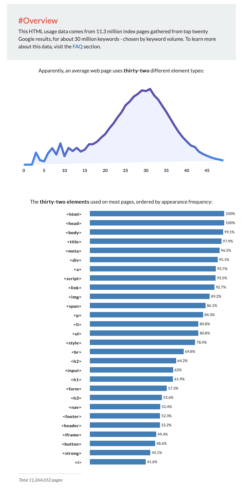

- 1. HTML
- 2. CSS
- 3. JavaScript
HTML이란 무엇인가?
Hypertext Markup Language (HTML) is the standard markup language for creating web pages and web application.
creating web pages
TAG - 설명하기 위한 것.
컴퓨터 공학의 여러 개념들은 '시'와 유사하다.
쉬운 것은 사소하고, 어려운 것은 중요하다 - 가 올바른 생각일까?
Heading level 1
Heading level 2
Heading level 3
Heading level 4
Heading level 5
Heading level 6
통계에 기반한 학습
HTML에는 150개 이상 TAG가 존재
기본적으로 알아야 할 태그들은?
https://www.advancedwebranking.com/html

인기있는 두 경쟁자 tag : br vs p
Hypertext Markup Language (HTML) is the standard markup language for creating web pages and web applications.Web browsers receive HTML documents from a web server or from local storage and render them into moltimedia web pages. HTML describes the structure of a web page semantically and originally included cues for the appearance of the document.
HTML elements are the building blocks of HTML pages. With HTML constructs, images and other objects, such as interactive forms, may be embedded into the rendered page. It provides a means to create structured documents by denoting structural semantics for text such as headings, paragraphs, lists, links, quotes and other items. HTML elements are delineated by tags, written using angle brackets.
br tag는 단지 줄바꿈이라는 시각적인 의미만을 가지기에 닫지 않음
p tag는 정해져있는 여백만큼만 간격을 가지게 됨
CSS는 다음에...
html이 중요한 이유 - 비즈니스
tutorials.org
내 웹페이지에 총 1억개의 코딩이 있다면?
검색 엔진은 전세계에 있는 모든 웹페이지를 다운로드받아서 그 웹페이지의 html 구성 요소들을 분석함
coding
시각적으로 제목인 coding인 사이트
coding
html 구성요소의 제목이 coding인 사이트
html이 중요한 이유 - 휴머니즘
웹의 특별함은 어디서나 접근할 수 있는 접근성 = accessibility
예를 들어 시각 장애인들의 경우, 시각적인 정보를 청각화해서 정보를 접하게 되는데 스크린 리더와 같은 보조 장치를 통해 웹페이지를 이쁘게 만들기 위해 문자까지 통으로 이미지로 만들면 시각 장애인분들에게는 없는 정보가 됨.
속성(=Attribute), 태그의 심화판과 img
Hypertext Markup Language (HTML) is the standard markup language for creating web pages and web applications.Web browsers receive HTML documents from a web server or from local storage and render them into moltimedia web pages. HTML describes the structure of a web page semantically and originally included cues for the appearance of the document.
HTML elements are the building blocks of HTML pages. With HTML constructs, images and other objects, such as interactive forms, may be embedded into the rendered page. It provides a means to create structured documents by denoting structural semantics for text such as headings, paragraphs, lists, links, quotes and other items. HTML elements are delineated by tags, written using angle brackets.
img src="1.jpeg" width='100%'
img width='100%' src="1.jpeg"
부모와 자식 그리고 목차
목록을 작성하는데 쓰이는 li tag
li 태그의 부모 ul
li - list item
ol - ordered list
ul - unordered list
The table element
| Month |
Savings |
| January |
$100 |
| February |
$80 |